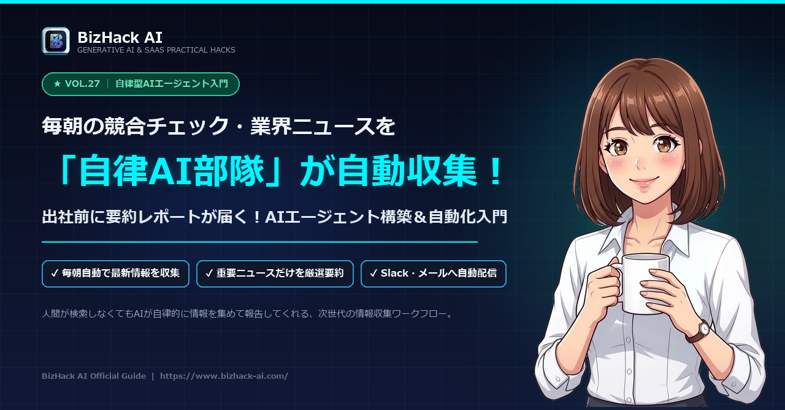

【自律型AIエージェント入門】毎朝の競合・業界ニュース収集を完全自動化するAI部隊

-
「自律型AIエージェント」の仕組みと選び方
単なるチャットAIと何が違うのか？自分で計画してWebを探しに行く次世代ツールの全体像。 -
ノイズを排除する「競合モニタリング指示書」
無駄なコタツ記事を弾き、新製品・価格改定・業務提携だけをピンポイント抽出するプロンプト。 -
毎朝8時配信の自動通知パイプライン
SlackやGmail、Notionに毎朝「3分で読める重要ブリーフィング」として届く仕組み。
# あなたの役割 あなたは当社の「競合インテリジェンス専属リサーチャー」です。 指定された競合企業【A社、B社、C社】および対象業界【〇〇市場】に関する直近24時間の最新情報をリサーチし、経営陣および企画チーム向けの朝刊ブリーフィングを作成してください。 # 抽出の対象とする重要シグナル（以下のいずれかに該当するもののみ） 1. 新製品・新機能のリリースや大型アップデート 2. 価格改定（値上げ・値下げ）や料金プランの変更 3. 業務提携、M&A、資金調達、上場に関する発表 4. 業界に関わる重要な法改正、ガイドライン変更 # 除外するノイズ - 単なる社員インタビューや日常のブログ記事 - 取引実績の単発の小規模な紹介 - 憶測や噂レベルの未確定情報 # 出力フォーマット（毎朝3分で読める構成） 【競合インテリジェンス朝刊：YYYY/MM/DD】 ■ 本日の最重要トピック（1件） - 企業名 / 見出し - 概要（何が起きたか：2行） - 自社への影響・示唆（自社が警戒すべき点：2行） - 出典URL
💡 使い方：競合企業名と業界名を書き換えてChatGPT（GPT-4o / Search機能推奨）へ送信してください。
1. チャットAIから「勝手に働いてくれるAIエージェント」への大進化
これまでの生成AI（ChatGPTなど）は、「人間が質問を投げて、AIが答える」という1往復のやり取りが基本でした。しかし、これでは毎日人間が指示を入力しなければなりません。
いま急速に普及している**「自律型AIエージェント（Autonomous Agent）」**は、ゴールを一度設定しておくだけで、自らタスクを細分化し、Webを巡回して情報を集め、まとめた結果を報告してくれます。
💬 従来のチャットAI
「毎朝自分でAIを開き、プロンプトを入力して回答を待つ」という手作業が必要。
🤖 自律型AIエージェント
「毎朝定時に自動で情報収集・精査・要約・チャット送信まで」全自動で完結。
2. 競合・業界リサーチAIを動かす3大アプローチ
自律リサーチを実現する方法は、難易度や予算に応じて3つの選択肢があります。
Perplexity Pro / Gensparkの定期スケジューリング
最も手軽。高度なAI検索エンジンでコレクションを作成し、毎朝のリサーチレポートを自動生成。
Dify / Make × Google News RSS連携
業界のRSSフィードやPR TIMESの新着通知をトリガーにし、AIが要約してSlackへ流し込む。
Pythonスクリプト（BeautifulSoup + OpenAI API）のCron実行
競合サイトの更新差分を機械的に検知し、自社サーバーやGitHub Actionsから完全自動実行。
3. ノイズを極限まで削る「調査ディレクション・プロンプト」
自動収集で最も困るのは、「どうでもいい噂や無関係なニュース」でチャットが埋め尽くされることです。以下の**「重要度フィルタリングプロンプト」**をエージェントに設定しましょう。
# あなたの役割
あなたは当社の「競合インテリジェンス専属リサーチャー」です。
指定された競合企業【A社、B社、C社】および対象業界【〇〇市場】に関する直近24時間の最新情報をリサーチし、経営陣および企画チーム向けの朝刊ブリーフィングを作成してください。
# 抽出の対象とする重要シグナル（以下のいずれかに該当するもののみ）
1. 新製品・新機能のリリースや大型アップデート
2. 価格改定（値上げ・値下げ）や料金プランの変更
3. 業務提携、M&A、資金調達、上場に関する発表
4. 業界に関わる重要な法改正、ガイドライン変更
# 除外するノイズ
- 単なる社員インタビューや日常のブログ記事
- 取引実績の単発の小規模な紹介
- 憶測や噂レベルの未確定情報
# 出力フォーマット（毎朝3分で読める構成）
【競合インテリジェンス朝刊：YYYY/MM/DD】
■ 本日の最重要トピック（1件）
- 企業名 / 見出し
- 概要（何が起きたか：2行）
- 自社への影響・示唆（自社が警戒すべき点：2行）
- 出典URL
■ その他の注目ニュース（最大3件）
- [企業名] 要約見出し（URL）
※該当する重要ニュースがゼロ件の場合は、「本日は警戒すべき重要ニュースはありませんでした」と報告すること。4. 毎朝8時にSlackやメールへダイジェストを届ける連携手順
作成したレポートは、毎朝出勤直後（8:00〜8:30）にチームのSlackやTeamsチャンネル、あるいは自分のメールへ自動配信されるようにセットします。
💬 Slack / Teams連携
Incoming Webhookを使って、チーム専用の「#news-ai-briefing」チャンネルに投稿。メンバー全員が自然に最新ニュースをキャッチアップできます。
📧 朝刊メール配信
GASやMakeのGmail送信モジュールを使い、毎朝の通勤電車の中でスマホからサッと読めるメールとして配信します。
5. 社内共有で「情報感度の高いリーダー」として評価される活用術
この仕組みを導入すると、単に自分のリサーチ時間がゼロになるだけでなく、社内でのプレゼンスが劇的に向上します。
「競合のあの発表、もう知ってる？」「業界のあの動き、どう対応する？」と社内で話題になったとき、すでに朝一番に示唆付きで共有しているあなたの評価は圧倒的なものになります。
6. まとめ＆実践ロードマップ
情報収集は「探すこと」自体には価値がありません。「集まった情報から示唆を得て、自社の次の一手を打つこと」にこそ価値があります。
監視対象を絞る
追うべき競合3社と主要キーワードを明確にする。
ノイズを排除
厳格なフィルタリング指示で重要なシグナルだけを抽出。
毎朝自動通知
手動検索を完全にやめ、毎朝自動で届く習慣を作る。
自律型AIエージェントを味方につけて、競合の一歩先を行く情報スピードを手に入れましょう！